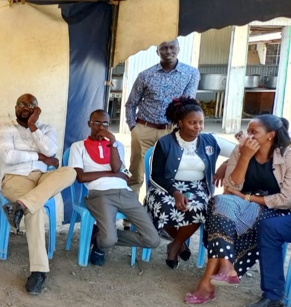

Agriculture plays a crucial role in Kenya's economy, providing food, employment and revenue. However, many farmers face challenges such as lack of timely information, unpredictable weather patterns, and limited access to expert advice. This project proposes the develgroConnect, a software application that will enable farmers to communicate with each other and recieve timely guidance on the best planting season.
PROBLEM STATEMENT
Farmers often struggle with the following challenges:
Lack of reliable communication platforms for sharing agricultural knowledge.
Difficulty in predicting the best time to plant due to changing weather patterns
Limited access to expert farming advice and market trends.
Challenges in connecting with suppliers and buyers
A software solution designed to address these issues will significantly improve agricultural productivity and efficiency.
OBJECTIVES OF THE PROJECT
AgroConnect aims to:
Provide a communication platform where farmers can share experiences and advice.
Offer real-time weather updates and recommendations on planting times.
Connect Farmers with agricultural experts and market opportunities.
Enable access to government and agricultural extension services.
Improve overall decision-making and productivity in farming.
SOFTWARE FEATURES
The proposed software will have the following key features:
User Registration: Farmers create accounts to access the platform
Discusion Forum: A space for farmers to share experiences, ask questions, and offer solutions.
Connect Farmers with agricultural experts and market opportunities.
Weather Forecast Intergration Real-time updates on weather conditions and best planting times.
Expert Consultation: Access to agricultural specialists for professional advice.
Market Information: Updates on crop prices, demand, and supply chains.
Notification System: Alerts on upcoming weather changes, farming events, and important announcements.
TARGET USERS
The software is designed for:
Small and large-scale farmers.
Agricultural officers and extension workers.
Researchers and agribusiness professionals.
Agricultural suppliers and buyers.
DEVELOPMENT APPROACH
The development of AgroConnect will follow these steps:
Research & Data Collection: Identify farmers' needs through surveys and interviews.
Design Phase: Create a user-friendly interface with easy navigation.
Software Development: Use programming languages such as Python, Java, or web-based tools.
Testing & Feedback: Conduct trials with selected farmers and experts.
Implementation & Launch: Deploy the software for use and provide training sessions.
EXPECTED IMPACT
Increased access to reliable agricultural information.
Better coordination and cooperation among farmers.
Improved decision-making on planting and harvesting.
Higher agricultural yields and income for farmers.
Strengthened agricultural networking and partnerships.
CHALLENGES AND SOLUTIONS
CHALLENGES
Low digital literacy among farmers
Unstable internet access in rural areas
Data accuracy
POSSIBLE SOLUTIONS
Provide user training and a simple interface
Develop an offline mode and use SMS integration
Collaborate with meteorological and agricultural institutions
CONCLUSION
This project seeks to empower farmers with AgroConnect, a digital platform that enhances communication, provides crucial farming insights, and boosts productivity. Through effective software development and collaboration with stakeholders, the agricultural sector can leverage technology for sustainable growth.
Farmers working with us

Farmers from NakuruFarmers from NjoroFarmers from langalanga